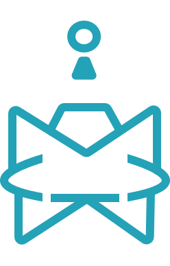

Irfan (KOJEEE)
Halo Saya Irfan atau dikenal sebagai Koje. Saya merupakan desainer grafis
📁Design📁
Horimiya Design
💫JKT48💫
JKT48 Showroom Fanmade
Aplikasi Ngidol48
© 2023 - KOJE, All Rights Reserved.
Halo Saya Irfan atau dikenal sebagai Koje. Saya merupakan desainer grafis
© 2023 - KOJE, All Rights Reserved.